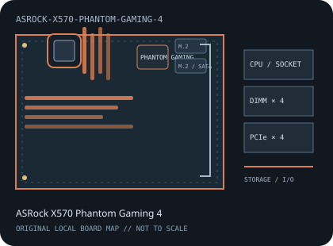

[ INDIVIDUAL COMPONENT // MOTHERBOARDS ]
ASRock X570 Phantom Gaming 4
AMD Socket AM4 / AMD X570, ATX, 305 × 244 mm, 2019. This record identifies the exact model and revision scope below.

REVISION WARNING: Verify the full model name and PCB revision silkscreen before fitting a CPU, selecting memory, or applying firmware. Similar names and revisions may use different support files.
Specifications
| Catalog subcategory | AMD Socket platforms |
|---|---|
| Board / revision covered | X570 Phantom Gaming 4 standard ATX retail model; distinguish it from the Phantom Gaming 4S and other X570 variants. |
| Socket and chipset | AMD Socket AM4 / AMD X570 |
| Form factor | ATX, 305 × 244 mm |
| Memory | Four dual-channel DDR4 DIMM sockets, up to 128 GB; supported speed and ECC UDIMM behavior depend on CPU and BIOS. |
| CPU and BIOS support | Ryzen processors listed by ASRock for the X570 Phantom Gaming 4, including Ryzen 2000/3000 and supported later 4000G/5000 families with the required BIOS. Verify each CPU in the model's list. |
| Expansion | Two PCIe 4.0 x16-length slots (primary up to x16, secondary up to x4) and two PCIe 4.0 x1 slots; PCIe generation may be reduced by processor. |
| Storage | Two Hyper M.2 sockets with PCIe 4.0 x4 paths and eight SATA 6 Gb/s ports; follow ASRock's documented M.2 and SATA sharing conditions. |
| Rear I/O and connectivity | Rear HDMI and DisplayPort for supported APUs, USB Type-A ports including USB 3.2 Gen 2, Gigabit Ethernet, and multi-channel audio. No onboard Wi-Fi; M.2 Key E supports an optional module. |
Compatibility and revision notes
Use BIOS and CPU support files for X570 Phantom Gaming 4 specifically, not Phantom Gaming 4S. Integrated display output requires a compatible APU; confirm M.2/SATA sharing in the manual.
Socket, connector shape and chipset branding alone do not establish compatibility. Check the exact board revision, CPU support table, minimum BIOS, memory population rules, power connectors, case clearance and lane-sharing details in the cited documents.
Preservation and repair
Inspect chipset cooling, AM4 socket pins, M.2 heatsink fit and the eight SATA connectors; record firmware and model suffix before recovery.
For archival preservation, record PCB revision, serial/date codes, installed firmware, known faults, repairs and test conditions. Use ESD-safe handling and do not power a board with loose conductive hardware beneath it.
Manufacturer sources
- ASRock X570 Phantom Gaming 4 specificationsManufacturer specifications for the exact Phantom Gaming 4 model.
- ASRock X570 Phantom Gaming 4 user manual (PDF)Official board manual for connector, storage and installation details.
- ASRock X570 Phantom Gaming 4 BIOS and supportUse the CPU list and BIOS release notes for this model.
Manufacturer specifications, manuals and support lists are authoritative for the physical board; use only revision-matched firmware.